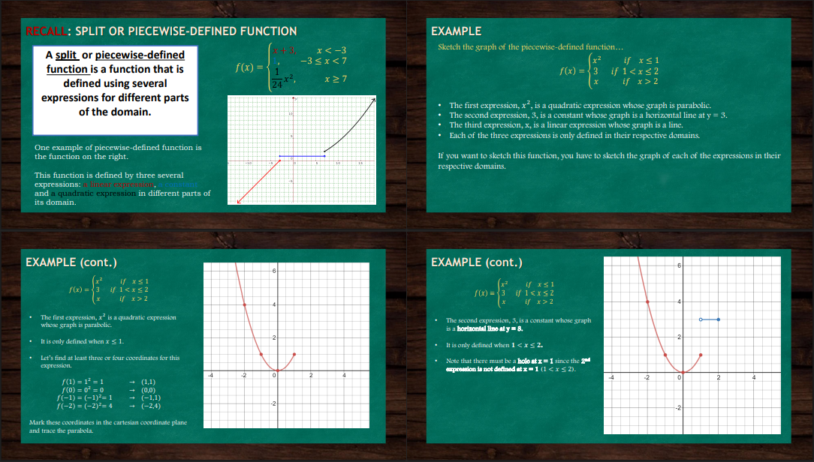

This slide introduces the idea of a piecewise-defined function, also known as a split function. It explains that this type of function is made up of multiple smaller functions, each one applying to a specific portion of the input values. The overall function changes its behavior depending on the value you plug in. A small graph example is shown to illustrate how different rules can apply to different parts of the x-axis, creating a function that looks like separate segments joined together.
This slide begins a full example of how to graph a piecewise-defined function. It presents a function that consists of three separate expressions: one that curves upward, one that stays constant as a flat line, and one that moves upward in a straight line. The goal here is to understand how to sketch each part of the function only within its allowed section. The curved part is used for input values less than or equal to a certain number, the flat section applies to values just slightly larger, and the straight line is for even larger inputs.

Now, the slide focuses on graphing the first two parts of the function mentioned earlier. The curved section is drawn for the first range of input values, showing a smooth bend that ends at a specific point. The second part, which is the flat line, is drawn next to it, but with a gap at the point where the curved line ended. This gap is important because the flat line only starts just after that value and doesn’t include the end of the curved section. This helps illustrate how to graph pieces accurately and respect their individual intervals.

Here, the final part of the function is added to the graph — the straight-line section. It starts only after a certain point, meaning it doesn’t include the point where the previous flat section ended. Because of this, a small open circle, known as a hole, is placed on the graph to show that the function skips that exact point. The slide walks through how to find at least two points for this straight line so that it can be plotted clearly and correctly within its allowed interval.

This slide explains how to find the domain and range of the full function shown on the graph. The domain is all the possible input values that the function accepts, which in this case is all real numbers because there are no gaps in the input. The range is all the possible output values that come from the function. For this function, the output values start at zero and increase, so the range includes all numbers from zero going up. The slide points out that every part of the function contributes to covering all inputs and all outputs above zero.